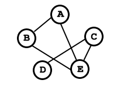
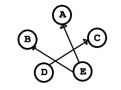

Estructuras de Datos
Grafos
Definicion
Los grafos son un conjunto de puntos, de los cuales algún par de ellos está conectado por unas líneas. Si estas líneas son flechas, hablaremos de grafo dirigido (digrafo), mientras que si son simples líneas estamos ante un grafo no dirigido. Más formalmente se pueden definir como un conjunto de vértices y un conjunto de aristas. Cada arista es un par (u,v), donde u y v pertenecen al conjunto de vértices. Si este par es ordenado el grafo es dirigido.
Vamos a ver un par de ejemplos:
Grafos no dirigidos
Grafos dirigidos
